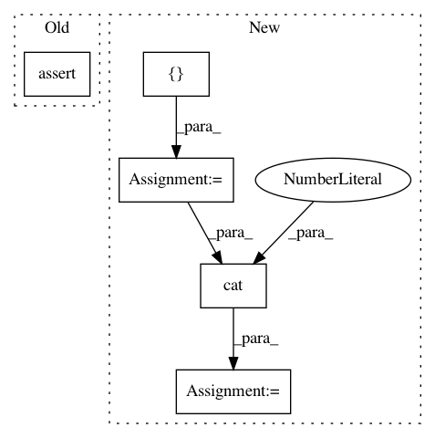

41bb60a5b4c5d3d1624a18be33963479f85dc1a0,catalyst/metrics/tests/test_iou.py,,test_iou,#,6
Before Change
// check 0.5: half overlap
top_left = torch.zeros(shape)
top_left[:, :, :half_size, :half_size] = 1
assert iou(top_left, left).item() == 0.5
// @TODO: restore
// check multiclass: 0, 0, 1, 1, 1, 0.5
// a = torch.cat([empty, left, empty, full, left, top_left], dim=1)
After Change
// check multiclass: 0, 0, 1, 1, 1, 0.5
a = torch.cat([empty, left, empty, full, left, top_left], dim=1)
b = torch.cat([full, right, empty, full, left, left], dim=1)
ans = torch.Tensor([0, 0, 1, 1, 1, 0.5])
assert torch.allclose(iou(a, b, class_dim=1), ans)
aaa = torch.cat([a, a, a], dim=0)
bbb = torch.cat([b, b, b], dim=0)
assert torch.allclose(iou(aaa, bbb, class_dim=1), ans)
In pattern: SUPERPATTERN
Frequency: 4
Non-data size: 5
Instances
Project Name: Scitator/catalyst
Commit Name: 41bb60a5b4c5d3d1624a18be33963479f85dc1a0
Time: 2020-12-13
Author: scitator@gmail.com
File Name: catalyst/metrics/tests/test_iou.py
Class Name:
Method Name: test_iou
Project Name: interactiveaudiolab/nussl
Commit Name: fa6f47e7aee228226421c52e61cce4e1ab4cc099
Time: 2020-03-15
Author: prem@u.northwestern.edu
File Name: tests/ml/test_loss.py
Class Name:
Method Name: test_permutation_invariant_loss_tf
Project Name: dmlc/dgl
Commit Name: 25ac33440334fd2fdfe3fe4e4dd3dd1428601a47
Time: 2021-01-24
Author: zhengda1936@gmail.com
File Name: python/dgl/distributed/graph_services.py
Class Name:
Method Name: sample_neighbors